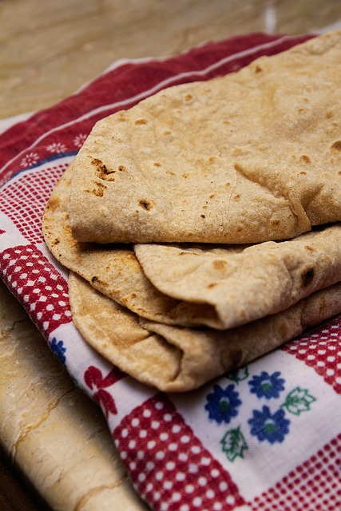

Chapati

Description
Most people complain about chapatis not being soft, Some blame it on the flour, others on the temperature of the water being used; Others swear by hot water, others cold water and even warm water.
I decided to give a step by step guidance on how to hack a soft layered chapati.
The trick to getting a soft chapati boils down to 2 things
1. How you knead your dough... Don't be in such a hurry... Work on your dough thoroughly.
2. The heat should not be too high nor too low.
The temperature of the water being used to knead doesn't matter.
Ingredients
- 3 Cups all purpose flour sieved(Not measuring cups)
- 2 Tablespoon Margarine(Optional)
- 1 Tablespoon Sugar(Optional)
- 1/2 Teaspoon salt
- 1 1/2 Cups warm water
- Oil for cooking
Steps
- In a bowl, mix flour, sugar and salt. Add Margarine, mix with hands to form crumbs.
I use a little bit of sugar in mine because I love the savoury taste. Omit it, if you don't like sugar.
-
Make a well and pour water bit by bit as you knead.
Knead for atleast 5 mins, if the dough is sticky, add flour bit by bit as you knead.
-
Continue kneading on your work surface for another 3 mins.
(FOR SOFT CHAPATIS, YOU SHOULD KNEAD THOROUGHLY)
-
Finally dough should be firm but soft and not sticky.
Cover with a damp cloth/ cling film/plastic polythene bag for 30 minutes.
-
After 30mins, knead again and cut into balls.
-
Roll out the balls in a circular shape with a rolling pin,
one at a time and brush with oil, as shown in the pics.
-
Fold as shown.
-
Roll the balls out again forming the circle.(Layers should be visible on the rolled out dough).
-
In a medium heat, place your skillet, let it warm up.
Then put your chapati ontop. Fry both sides until brown.
Once cooked remove and place it in a containee and cover.